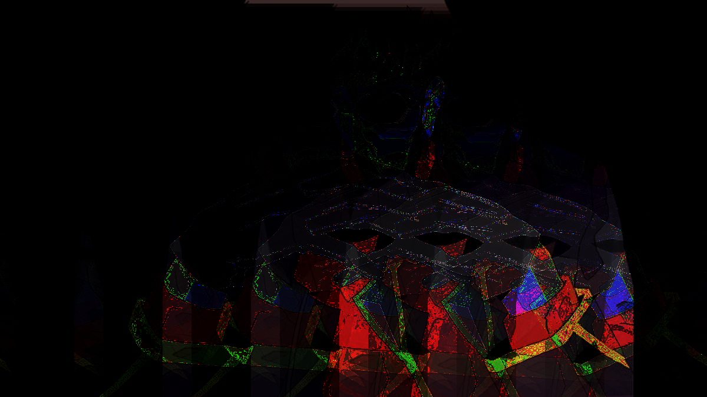
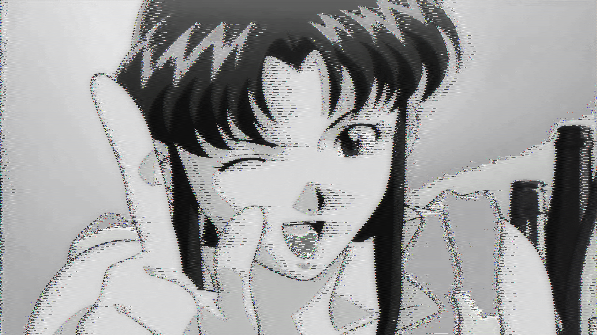

Final: Shoujo Anime Glitch Arts

Skip & Loafer Museum Glitch
Sources: Adobe Photoshop & Text Editor
Gendo Ikari
Misato Katsuragi
For my glitch artworks, I focused on the anime series, Neon Genesis Evangelion, as my topic. The three characters I mainly focused are Ikari Shinji, Ikari Gendo, and Katsuragi Misato. To me, I see them as all family in a sort of interesting way, or in other words, Shinji's parent or guardian figures, and how they raise, yet corrupt his life as a human being.